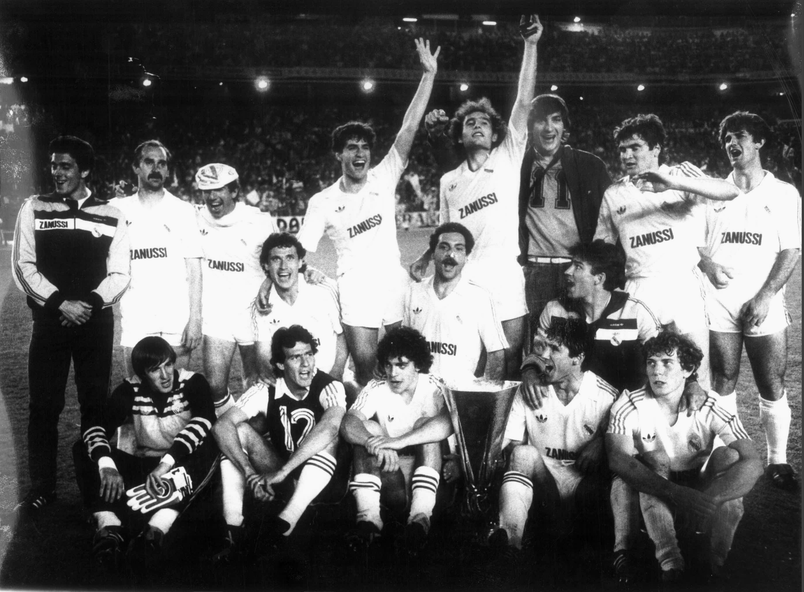

Historia y Leyenda
El Real Madrid Club de Fútbol o simplemente Real Madrid, es una entidad polideportiva con sede en Madrid, España. Fue registrada oficialmente como club de fútbol por sus socios el 6 de marzo de 1902 con el objeto de la práctica y desarrollo de este deporte —si bien sus orígenes datan del año 1900, y su denominación de (Sociedad) Madrid Foot-ball Club de octubre de 1901—. Decano del fútbol madrileño, tuvo a Julián Palacios y los hermanos Juan Padrós y Carlos Padrós como principales valedores de su creación.Identificado por su color blanco —del que recibe el apelativo de «blancos» o «merengues»—, es uno de los cuatro clubes profesionales de fútbol del país cuya entidad jurídica no es la de sociedad anónima deportiva (S. A. D.), ya que su propiedad recae en sus más de 90 000 socios. Otra salvedad comparte con el Athletic Club y el Fútbol Club Barcelona al participar sin interrupción en la máxima categoría de la Liga Nacional de Fútbol Profesional, la Primera División de España, desde su establecimiento en 1929. En ella posee los honores de haber sido el primer líder histórico de la competición, el de equipo con más títulos, y el de la máxima puntuación en una sola edición.
